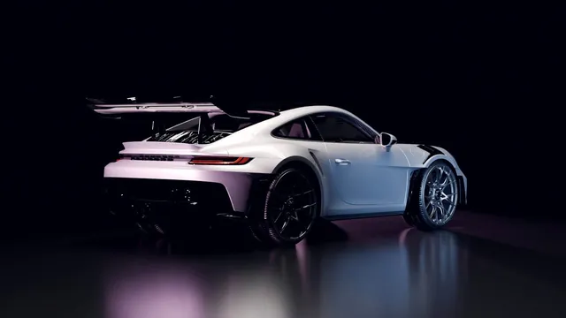

Startul
Cu mașinile din garajul tău: Cursa zilei, dueluri pe bani cu adversari din aceeași clasă și Cupa de duminică.

Provocarea zileiSus sau josAceleași mașini pentru toți Joacă
Cu mașinile din garajul tău: Cursa zilei, dueluri pe bani cu adversari din aceeași clasă și Cupa de duminică.

10 secunde pe mașină, o greșeală și s-a terminat. Fiecare partidă intră în clasament, iar săptămânal se dau premii.

Fiecare mașină nouă intră la locul ei, în 10 secunde. Fiecare partidă intră în clasament, iar săptămânal se dau premii.

Faci o cameră, îi trimiți codul unui prieten și licitați fiecare de pe telefonul lui. Cu miză în mil. sau doar de plăcere.

Faci o cameră, îi trimiți codul unui prieten și alegeți pe rând mașini pentru cele 8 sloturi, fiecare de pe telefonul lui.

Pachetul tău de 20 de mașini din garaj, 5 în mână. Pe fiecare categorie pui o carte; cine pierde runda alege categoria următoare.
Primești o mașină și alegi din toată lista, în afară de marca ei, câte una cât mai apropiată la cai putere, greutate și 0-100.
Deschideți pachete, vă așezați mașinile pe ascuns și vă întreceți pe sfert de milă. Pe același telefon sau contra botului.
Mai mulți cai sau mai puțini? Mai grea sau mai ușoară? O greșeală și s-a terminat.
Fiecare mașină nouă intră la locul ei în clasament. Cu cât crește lista, cu atât e mai strâns.
10 milioane fiecare, 12 mașini pe masă. Licitați pe rând, apoi mașinile voastre se bat pe categorii.
Două mașini pe rundă, opt sloturi de umplut. Cea mai bună combinație câștigă.

Unul pune o mașină pe turometru, restul ghicesc unde. Cu cât mai aproape, cu atât mai bine.

Trei mașini: una în garaj, una la vânzare, una la presă. Fără răspuns corect, doar alegeri grele.
Așa apari în clasamente și în dueluri. La jocurile locale scrii numele jucătorilor în joc.